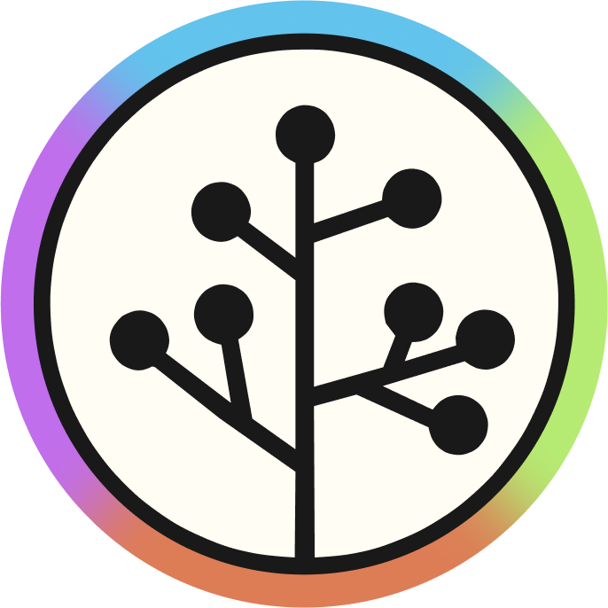

I am a computer scientist, software engineer and researcher in title and a programmer, problem solver and learner at heart.
Since 2012, when I first started making my own games with Lua and Roblox, I have been exploring different areas in computer science and learning new technologies, languages and paradigms as I go. Nowadays I have been interested in learning about people problems, management and strategic thinking.
I hold a B.Sc. in Computer Science from UEM and currently work as a full-stack web developer.
Skills
Interpersonal skills
- Teamwork, autonomy and leadership
- Clear, concise and effective technical communication
- Strategic thinking with a big-picture perspective
- Strong analytical and problem-solving skills
- Empathetic teaching and mentoring (experience organizing multiple technical courses at UEM)
- Proactive, self-motivated, excellent time management; performs effectively under pressure
- Rapid and avid learner, adaptable to new challenges
Technical skills
- Programming languages: C#, TypeScript, Java, Python, Lua, Rust, C
- Data: MongoDB, PostgreSQL, pandas, numpy, scikit-learn
- Methodologies: Agile (Scrum, Kanban)
- Web: HTML/CSS, ASP.NET Core, FastAPI, React, Angular, Next.js
- Game engines and frameworks: Roblox, LÖVE
Experience
-
DB1 Global Software
2025 - now
At DB1 Global Software, I worked on multiple client projects using C#, ASP.NET, Angular, PostgreSQL, AWS, and other technologies. In one project, I studied and optimized EF Core queries, reducing execution times by up to 50%. My performance and peer-recognized technical and soft skills led to a rapid promotion from trainee to junior in just five months. I also contributed to back-end integrations for ERP and logistics systems using C# and ASP.NET, gaining strategic system-level experience, and supported team cohesion through informal initiatives that improved collaboration and morale.
-

SECOMP
2022 - 2024
Organized the 2022, 2023, and 2024 editions of SECOMP, a week-long event of computer science talks, workshops, and hackathons at UEM. Responsibilities included website/system development, sponsorship and logistics management, coordinating staff, and liaising with companies and guest speakers.
-
PET-Informática
2022 - 2025
While a member of PET-Informática, a student group promoting personal development through research, teaching, and community outreach, I taught courses and workshops on programming and technologies, organized events, participated in candidate selection and contributed to research. These experiences strengthened my teamwork, leadership, and strategic planning skills.
Projects
Many of my past projects can be found at my GitHub profile. Here are a few highlights.
-
PET-Informática Website
2022 - 2024
I worked on the website for PET-Informática, which handled registrations and attendances for our courses and events. Built with FastAPI, MongoDB and Next.js.
-
Website for Freshmen's Welcome Week at UEM
2022 - 2023
Built websites for the 2022, 2023 and 2024 Freshmen's Welcome Weeks for the Department of Informatics at UEM using different web technologies.
-
Scoreboard Algorithm emulator
2023
Developed a CPU simulator in C that implements the Scoreboard algorithm for dynamic instruction scheduling, including a MIPS-like assembler.
-
clox-rust
2021
Implemented an interpreter for the Lox programming language in Rust. The codebase features a bytecode compiler and a virtual machine.
Research
My research has focused on machine learning, programming languages, and compiler technologies. At UEM, I worked on acoustic scene classification, proposing a novel method for combining classifiers in hierarchical contexts. I also co-authored a paper on applying machine learning to search-based software engineering, published at the 17th Brazilian Symposium on Software Components, Architectures, and Reuse, which received a Distinguished Paper Award. For my final course project, I implemented a WebAssembly backend for the Gleam compiler in Rust with wasm-tools, supporting advanced features such as pattern matching.
More details about my research work can be found in my Curriculum Lattes and my past publications in my ORCID profile.
Education
-
Universidade Estadual de Maringá
Bachelor's degree, Computer Science (with honors)
2021 - 2025
Contact me
My email is my name, period, surname at gmail dot com.